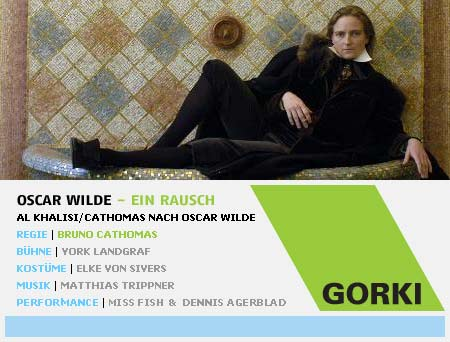

dunst Recommends:
Søndag 25. September 2005

Efter teaterskykkets premiere laver Miss Fish & Dennis Agerblad en performance i foyeen imens folk spiser pindemadder.
www.gorki.de/121-0-520.htm
Tilbage